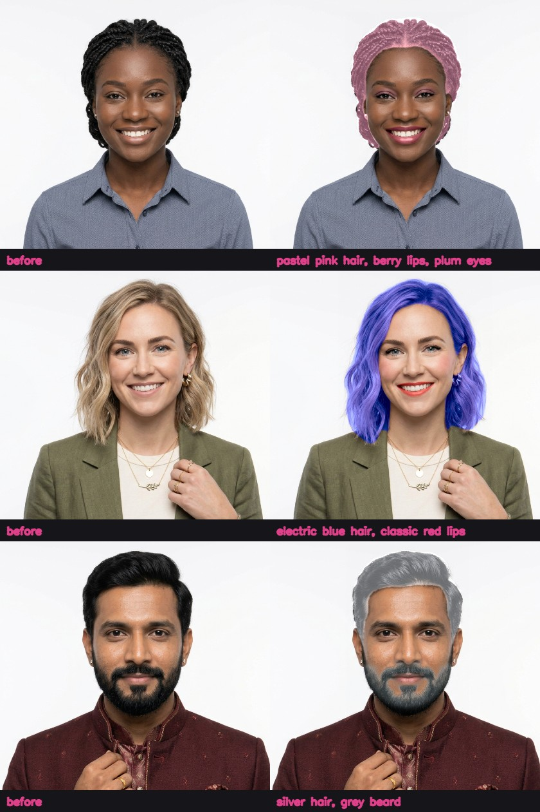
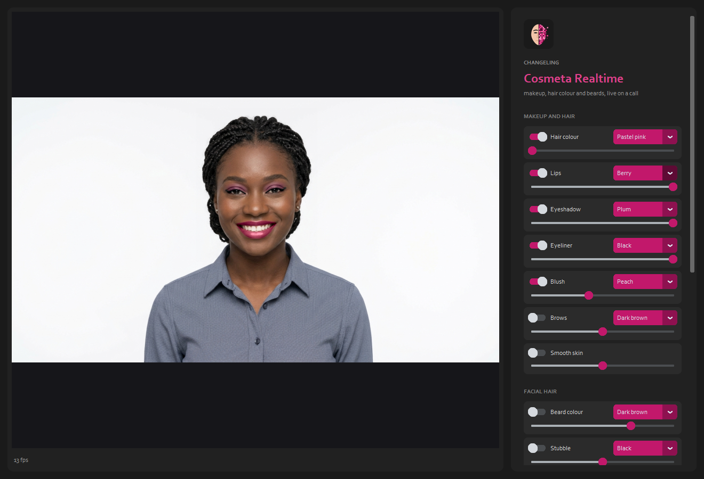

What it looks like
Before, and with a look painted on live. Every face is an AI-generated person who doesn't exist. Click to enlarge.

Use it
- Python 3.9 - 3.12, an NVIDIA GPU (4 GB is enough), a webcam; OBS for its Virtual Camera.
- Start
run.bat(orrun.ps1,run.sh). It fetches Changeling Cosmeta and Changeling Simia Realtime next to it if they're missing. - Switch on a look, pick its colour and strength; in the call, pick OBS Virtual Camera.
run_server.batuses your phone's camera.

How it's live
BiSeNet reads the face on the graphics card in a few hundredths of a second, Face Mesh follows it, and Changeling Cosmeta's own looks are painted around the face only: about 13 frames a second at 1280 x 720 on a 6 GB card.